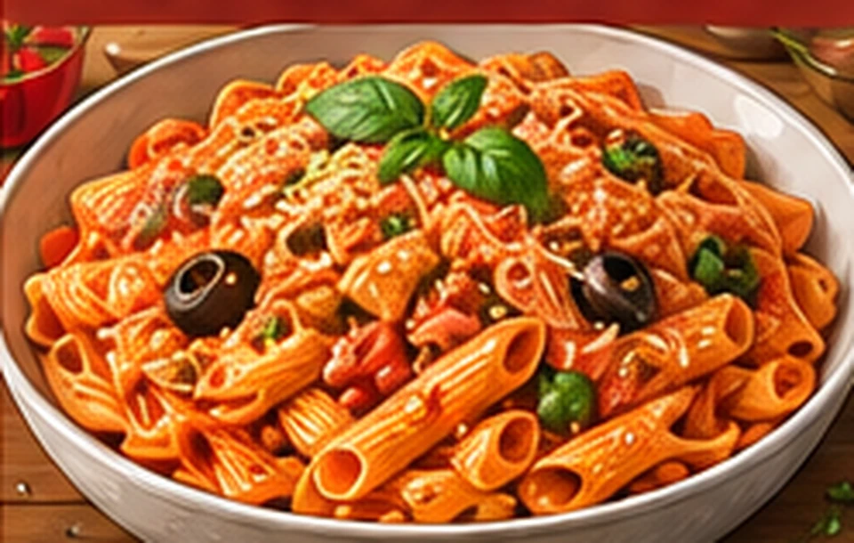

One-pan pâtes au chorizo
Une grosse portion maison, simple à préparer, avec des légumes et des protéines.
⏱ 25 min🍽 1 grosse portion💰 ≈ 3–5 €💪 ≈ 43 g protéines≈ 880 kcal
Ingrédients
- 110 g de pâtes sèches
- 120 g de chorizo
- 150 g de coulis de tomate
- 100 g de poivron
- 60 g d’oignon
- 30 g de mozzarella râpée
- 250 à 350 ml d’eau
- Paprika et basilic
Préparation
- Couper chorizo, poivron et oignon en petits dés.
- Faire revenir chorizo, oignon et poivron 4 min dans une grande poêle.
- Ajouter pâtes crues, coulis, paprika et 250 ml d’eau. Porter à petits bouillons.
- Cuire en remuant selon le temps des pâtes, en ajoutant de l’eau si nécessaire jusqu’à cuisson complète.
- Finir avec mozzarella et basilic hors du feu.
Conservation et réchauffage
Se garde 2 jours au réfrigérateur, mais meilleur juste après cuisson ; réchauffer avec de l’eau.
Nutrition et prix indicatifs : à recalculer selon les marques et quantités dans MyFitnessPal. Les sauces mentionnées sont sans poisson : vérifier les étiquettes.